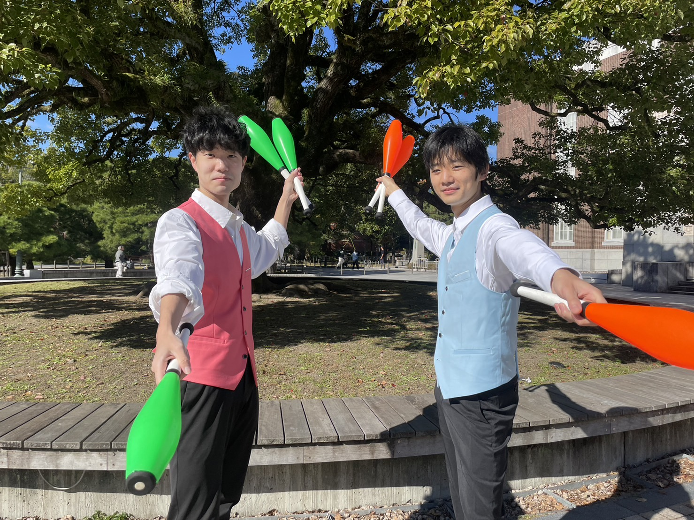
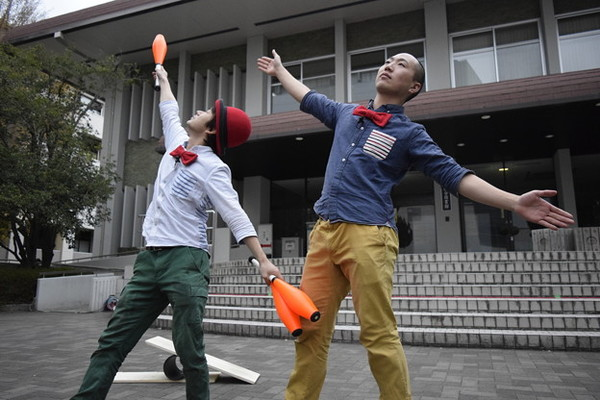

京都
大道芸の依頼について
私たちのパフォーマンスは、ジャグリングを主体とした20～30分程度のショーです。 音楽に合わせて行う完成度の高いジャグリングから、お喋りを交えながらのコミカルなパフォーマンス、 そして観客との掛け合いで大いに会場を盛り上げます。
ショー構成はご依頼の内容に合わせて、大道芸形式からステージショーの形式、あるいはジャグリング教室まで幅広く対応いたします。 幼児から大人まで、誰もが楽しめる内容になっております。 実際のショーの内容は、出演メンバーによって様々です。登場する主な道具としては、ジャグリングの基本であるボール（お手玉）、サーカスでおなじみのクラブ（ボーリングのピンのような棒）、最近テレビでも見かけるようになったシガーボックス（3つの箱）などがあり、そのほかにも身近にある様々な道具を、思いもよらない使い方でジャグリング道具に変えてしまいます。
出演人数はご依頼の内容・メンバーの都合にもよりますが、だいたい20～30分のショーをソロまたはコンビで担当させて頂いています。 ご希望をうかがった上で、最終的にこちらの判断で派遣人数を決定いたします。 出来る限りご希望には添えるようにいたしますが、日程・条件によってはお受けできないこともありますので、予めご了承ください。

- 
- 
出演依頼の注意事項
- ご依頼は、可能な限り出演日の2週間前までにお願いします。 2,3日での返答を希望されても対応できない場合がありますので、予めご了承ください。
- お申込み頂いてから2,3日の内に、ご依頼の内容確認のため出演依頼係より電話もしくはEメールにてご連絡差し上げます。 もし5日程経っても確認のメールが届かない場合、送信エラーの可能性がありますので、お手数ですがもう一度、異なる連絡先をご記入の上、メールのご送信をお願い致します。
- メンバーの多くは京都市在住です。 遠地の依頼（大阪、兵庫、滋賀etc）もできる限り応じていくつもりですが、場合によってはお受けできないことがあります。
- ジャグリングドーナツはアマチュアのサークルです。 出演費に関しては、基本的にこちらから提示することはございません。 金額は依頼主様のご希望に応じたいと思います。ただし、基本的に交通費だけは頂くことにしております。
- イベントによりますが、大道芸のときのようにお客さんからの投げ銭をもらう事が可能な状況ならば、それを出演費としていただいても構いません。
- クラウニング(徘徊型のパフォーマンス)を行う技術を持つメンバーはおりませんので、そのようなご依頼はお断りさせていただいております。
- 京都大学の他サークルと同時に呼んでも構わないかとのご質問をお受けする場合がありますが、こちらとしては一向に構いません。 ただ、他サークルを紹介して欲しいといった要望にはお応えできかねますので、ご了承ください。
その他ご不明な点やご相談については、出演依頼係( donuts.irai@gmail.com )までお気軽にお問い合わせください。